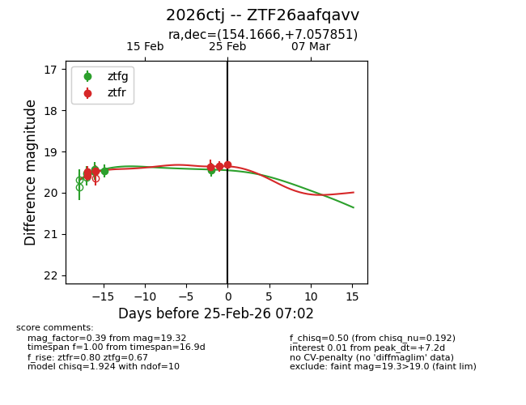
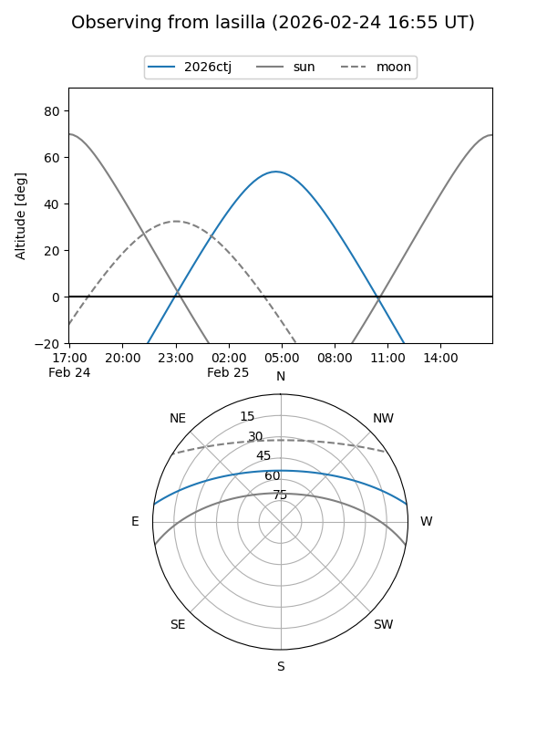
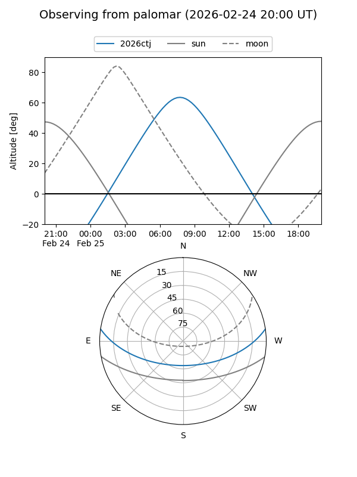
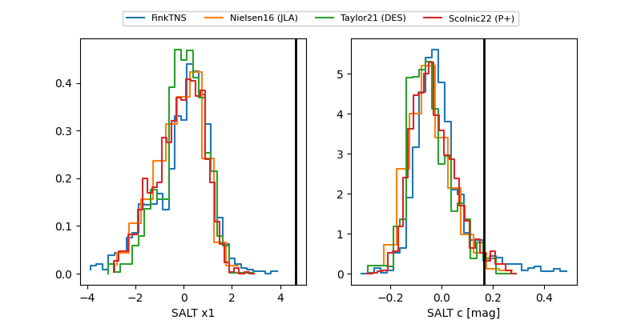

2026ctj
Target 2026ctj at 2026-02-25 07:03
Aliases and brokers:
FINK: link
Lasair: link
ALeRCE: link
TNS: link
YSE: link
alt names
ZTF26aafqavv (ztf,fink_ztf)
2026ctj (tns,yse)
Coordinates:
equatorial (ra, dec) = 154.1666,+7.05785
equatorial (HMS+DMS) = 10:16:39.99,+07:03:28.26
galactic (l, b) = (234.3890,+48.19406)
Flags:
Photometry:
last ztfg=19.45, ztfr=19.32
4 ztfg, 6 ztfr detections
Lightcurve

Visibility


Additional plots
